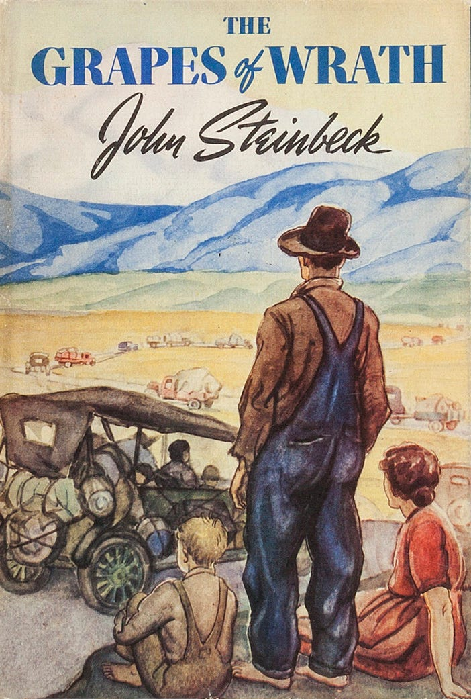
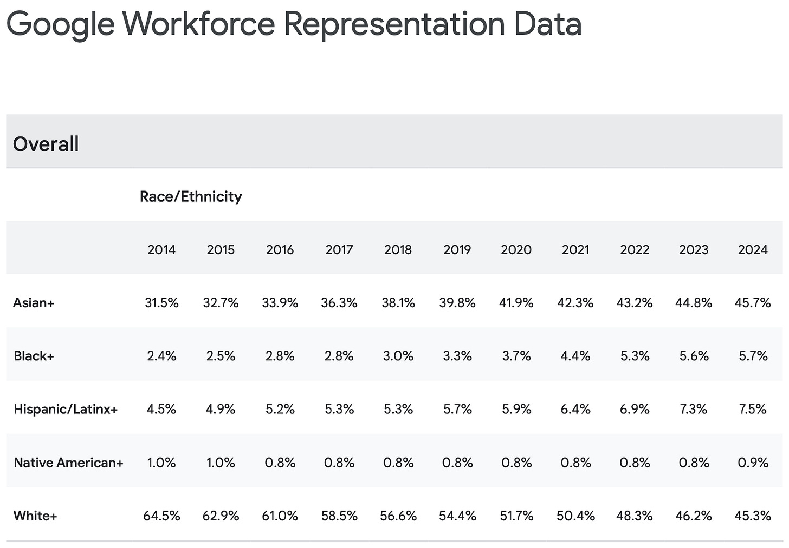
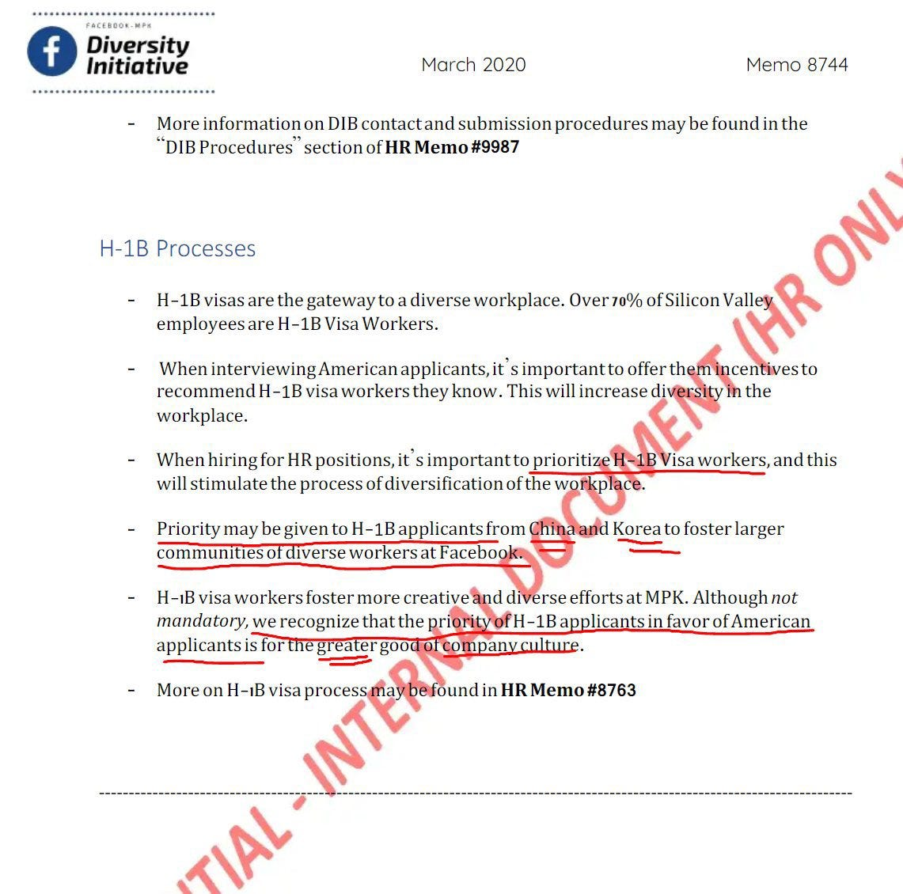
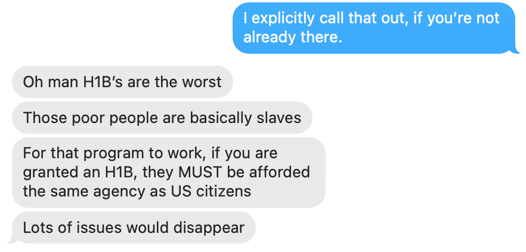
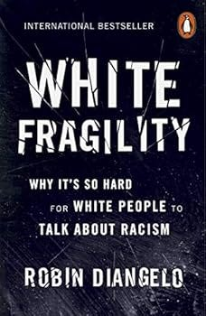
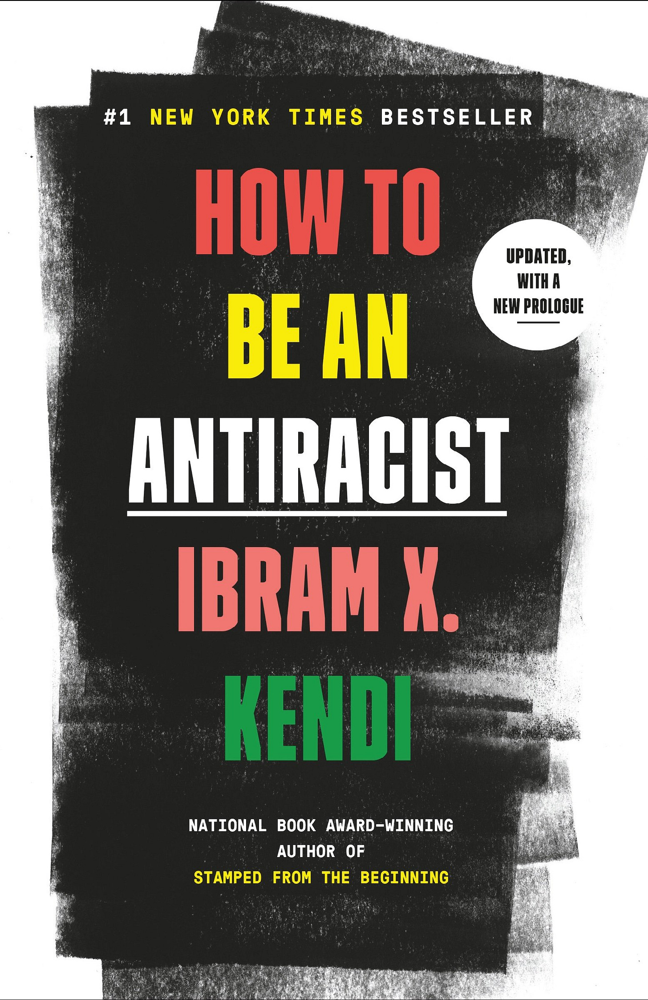
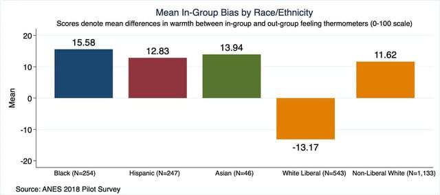

Reading Time: ~1 hour.
A recent editorial from Compact Magazine, called “The Lost Generation,” has prompted me to want to share my experience and my thoughts. The article addresses claims of discrimination against cisgendered white men in corporate America and academia. It presents evidence in support of these claims and explores their impact on the lives of individual white men.
The intent of this piece is to start a conversation about an issue that many people have been circling around for years in a society that is increasingly organized by ethnicity and gender. You may be unaware of the issues highlighted in this essay, or perhaps you have seen them already. The point is to establish the issue clearly for everyone, and focus the conversation.
My upbringing differed substantially from that of most people. I have been a foreigner in a strange land, and often felt like an outsider across multiple social groups. This perspective has shaped a worldview that I believe is worth considering. This essay blends narrative and analysis in a metamodern style. That oscillation is intentional. Some claims can only be understood at the level of lived experience; others only become visible at institutional or historical scale.
“The metamodern generation seeks to reconstruct meaning,
sincerity, and hope after the deconstruction of
postmodernism—without forgetting the lessons of irony.”
— Vermeulen & van den Akker (paraphrased)
My primary audience is straight white American men. However, I welcome people of other demographics to read and think about the topics discussed. My experiences are not presented as grievances, but as context. They shape understanding of how I encountered institutional responses to inequality, diversity, and social repair. What follows is an attempt to describe those systems, their incentives, and the unintended consequences I believe they produce and will produce.
What follows should not be read as autobiography or grievance. The experiences that I describe are not offered as proof, but as case studies — points of contact where abstract institutional incentives intersect with real life. The argument of this essay does not depend on whether any single experience was fair or unfair in isolation, but on the consistency of the patterns that emerge when these dynamics are viewed together.
For readers to fully understand my perspective they need to understand my lived experience and my ancestry. I’m beginning with this background not to ask for sympathy, but because the failures I later describe only become visible once you understand how coarse demographic reasoning collides with real, uneven lives. This background is not offered as grievance or mitigation, but to explain how I encountered institutional reasoning that uses skin color and gender as coarse stand-ins for lived experience.
“The smallest minority on earth is the individual.
Those who deny individual rights cannot claim to be defenders of
minorities.”
—Ayn Rand
Building this kind of shared understanding is necessary if we hope to maintain a functioning society in which people can live at peace or have any hope to achieve equity or equality. The following experiences matter not because they are unique to me, but because they reflect something about society and because they mirror experiences that many people share.
My name is Shammah Chancellor and I’m a 40-year-old white-skinned millennial man. My first name is of Hebrew origin, and my last name is of Scottish origin. I am neither ethnically Hebrew nor Scottish. I was born into a Jehovah’s Witness household in rural America. My family was in the bottom quartile of household income and qualified for government assistance, though we made limited use of it out of a sense of pride. Growing up, my shoes had literal holes in the bottoms at various times, and I wore second-hand clothes.
In college, unlike most other students, I worked nearly full-time and attended school part time. My family did not have the means to support me, and I did not qualify for many scholarships for a variety of reasons, despite maintaining an overall 4.0 GPA. Eventually, I joined the US Navy’s NUPOC program in order to be able to complete my degree in a reasonable amount of time. After my commitment I went on to become a software engineer in the Bay Area of northern California.
My mother was descended from Welsh immigrants and Utah Mormons, while my father believed himself to be of mixed Cherokee and Irish ancestry. For preschool, I was enrolled in a Native American school where I was bullied for being too white. I took great pride in my Cherokee heritage whose behavior towards Europeans was quite civilized, and the first tribe to develop a written form of their language. With my percentage of blood, nobody would ever assume that I was native nor did I claim this on any applications because we did not qualify for tribal membership.
My paternal grandfather was born near Tahlequah, Oklahoma, within the Cherokee nation. According to my father, some of our family had been relocated to that region during the Trail of Tears. My great-great-grandfather was a tenant farmer there. Only recently did I learn that this understanding was not completely accurate which I will discuss later — but it is part of what formed my life.

My father’s branch of the family migrated to California during the Dust Bowl under conditions described in John Steinbeck’s famous novel The Grapes of Wrath. The journey culminated around Bakersfield, California when one of the caravan’s vehicles was hit by a train. We were okies. Most of the adult men, who were riding together, died. Primarily, the women and children survived the trip and had little ability to support the family. My father grew up under conditions of extreme malnutrition in Northern California suffering from Kwashiorkor — some of the effects of this are passed down to children epigenetically. He became a Jehovah’s Witness in part because their missionaries helped the family.
Now, Jehovah’s Witnesses are arguably a distinct ethnic group who were formed from a diverse set of people from various races and ethnicities about 150 years ago. When someone becomes a Jehovah’s Witness, they give up all the trappings of normal society and put on an entirely new identity, and new social relationships. They are strongly apolitical, but privately my father was very much a progressive Democrat and supported socialism. My father was a voracious reader, and he spoke about politics often to me. I inherited many of his beliefs, and have kept what has made sense.
Associating closely with non-Jehovah’s Witnesses is strongly discouraged, except in limited contexts such as evangelism, work, or school. Those who leave often experience shunning, which can result in the loss of family and long-standing social relationships. I chose to leave that religion in order to pursue higher education, and because I no longer believed the organization held a sole claim on truth. I was also exposed to information about how they had redacted and modified published claims in order to maintain a perception of inerrancy in their repeated doomsday predictions.
I have effectively been a person without a community — an adult orphan navigating life largely on my own. My family left the Jehovah’s Witnesses many years after I did, but we never fully reconciled. My parents, in particular, struggled to recover from the failed end-times predictions they had believed in for decades. After leaving, both fell deeply into alcoholism, making it impossible for me to maintain a stable relationship with them. Involvement with that religion had kept them stable during my childhood, and for that I am grateful to the Watchtower Bible and Tract Society.
Jehovah’s Witnesses, and Christianity more broadly, teach a fundamentally egalitarian moral framework: that all people are created in the image of God (Genesis 1:27). God does not show favoritism (Romans 2:11). Indeed, Jesus broke social norms to speak with women and sinners (John 4:27). Likewise, Peter and Paul describe Christians as a distinct people, transcending ethnic and national divisions (1 Peter 2:9; Galatians 3:28). Christianity is therefore fundamentally egalitarian even where theological traditions debate roles or complementarity.
“There is neither Jew nor Greek, slave nor free, male nor
female,
for you are all one in Christ Jesus.”
— Galatians 3:28
For those familiar with the biblical tradition, it is evident that many secular Western views now regarded as “progressive” or left-wing are extended forms of Christian teachings. Modern ideologies often arise by extracting specific biblical principles—such as equality, universal dignity, or concern for the marginalized—and elevating them into comprehensive, self-sufficient explanatory systems. In this process, theological claims once embedded within a coherent metaphysical framework are recast as secular, totalizing doctrines.
Despite leaving the Jehovah’s Witnesses, I have retained many of their core teachings and continue to regard them as fundamentally right and good. The United States was clearly founded on similar principles, even though those ideals were contradicted for many years by the persistence of slavery (Declaration of Independence). I remain strongly committed to equality and diversity.
Growing up, I assumed these commitments were broadly shared across cultures. With age, however, I have come to realize that outside—and sometimes even within—Christianity, many societies are not meaningfully egalitarian and instead organize themselves along deeply tribal lines. Having apostasized, I no longer belonged to a clearly defined tribe myself, which made such ways of thinking difficult for me to even conceive.
It has been my experience living as a lone wolf in society, and observing others, that most people stick with whomever they perceive their own kind as. They help each other, live next to each other, and stick up for one another. With some minority communities this effect can be quite strong. In a society of rugged individualism, we often forget that we still need each other.
I have come to understand that others see me that way and treat me accordingly. Despite the stated aims of intersectionality, few people take the time to learn about my socioeconomic background or disabilities. That has caused me to question how I identify myself, and where I belong.
In my hope to find a tribe, or community, to which I could belong, I recently started investigating my own family history more thoroughly. Modern digitization has allowed me to do much better research prior to where oral tradition ended. My family history traces back to Norman and Scottish lines following the Norman Conquests. The history becomes hazy until around 7th-century Scotland.
My ancestor, Captain John Chancellor, was born into the landed gentry as a son of the Lairds of Shieldhill Castle. But, his life took a catastrophic turn in 1672 when had to flee Scotland as an indentured servant. He arrived in Maryland penniless and was once publicly whipped for fornication with a fellow servant who he eventually married. He was able to claim headrights to 50 acres of land in 1679 after his contract was fulfilled.
His son Thomas Chancellor moved to Westmoreland County, Virginia, where he established a successful alliance by marrying Katherine Fitzgerald Cooper. Katherine was the daughter of a wealthy physician and an Irish noblewoman (Lady Katherine Fitzgerald) who had herself ended up in the new world through kidnapping. She was supposed to be killed at sea, but the captain instead decided to put her up for adoption in America. A plot that enabled her uncles to inherit the family property in Ireland.
The land and social standing gained through this marriage allowed Thomas to restore the family’s status. He is eventually documented as owning seven enslaved people — a fact I find reprehensible, and one I did not learn until recently, but have included for accuracy. This wealth sustained the family for over a century, including through the Revolutionary War, where my ancestor Thomas Chancellor Jr. served as a soldier from Virginia, fighting for the new nation.
To me this raises a serious question: what obligations, if any, should be assigned across centuries to descendants who neither benefited materially nor even knew of these actions? We all know the conditions of racialized slavery were abhorrent, and even after its destruction the treatment of blacks precluded them from many opportunities. How should this be addressed?
“The past is never dead. It’s not even past.”
—William Faulkner
In what follows, I continue tracing my lineage in detail because it illustrates how moral narratives collapse generational rupture into a single inherited identity. It flattens history into guilt rather than understanding continuity and discontinuity.
Image Credit: MamaGeek at English Wikipedia, CC BY 3.0, via Wikimedia Commons
The family wealth was ultimately incinerated during the Civil War in 1863, when the historic Chancellorsville estate in Virginia was burned to the ground. However, my particular ancestor, John Cooper Chancellor, the son of Thomas Chancellor Jr. migrated to Missouri where he was a subsistence farmer and died near the beginning of the Civil War. He did not inherit that property. His son Thomas H. Chancellor, as well as other members of the family then fled to Arkansas likely to escape the extreme violence in Missouri. Henry’s son Thomas married Tennessee Blair. Ancestors of mine fought on both sides of the Civil War.
In the aftermath, my great-great-grandfather, Thomas H. Chancellor sought a new start by moving west to the Cherokee Nation in Oklahoma. He and his wife applied for tribal membership, and a land allotment, likely on the basis of extended family which were Cherokee. However, they were denied because she did not herself have direct Cherokee ancestry. They became tenant farmers there.
My great-grandfather, James Everett Chancellor was born on Indian land, and married Ida Mae Adkins whose family was strongly interwoven with the Cherokees. He eventually brought the family west during the Dust Bowl, but died at the end of the journey.
My grandfather worked odd jobs, and the family of 11 children primarily subsisted off of welfare. My father eventually clawed his way out of poverty through employment in the logging industry, but ultimately lost everything during the logging industry collapse of 1983. I was born a few years afterwards. He never maintained consistent employment after, and my mom became the primary breadwinner.
This is where the narrative breaks from history entirely. What follows is not about who I am or how I understand myself, but about how I am categorized by others. I did not arrive at a group identity through shared culture, shared experience, or shared intent. It was assigned to me — administratively, socially, and morally — and once assigned, it became something I had to account for whether I accepted it or not.
“The surest way to work up a crusade in favor of some good cause
is to promise people they will have a chance of maltreating
someone.”
— H. L. Mencken
In what appears to be an emerging social pecking order, I am grouped together with the sons of wealthy white-skinned men under the label “cisgendered white male,” a group that I’ve never felt particularly close with. In multiple contexts, I have observed this type of categorization being used as a sole justification for prioritizing opportunities. While nothing has been taken from me, the past behavior of this group is seen as justification for modern race and gender based discrimination against people falling under this label.
Yet, the sons and daughters of wealthy men are still given plenty of opportunities purely through networking and family social power. Neither of which my family had. The emerging bias causes opportunities to be missed primarily by those “cisgendered white men” who come from families with no social standing, wealth, or power. But, these are also the people who truly have very little part in what has happened in the past and what is happening today.
I do not present the following experience as evidence of discrimination. I do present it as a point where abstract institutional reasoning stops being theoretical and becomes something people experience.
For example, in 2014, I applied to PhD programs for computational physics, but quickly encountered resistance. Few faculty members at my preferred programs were willing to engage with me, and several interactions were openly dismissive. I was not able to find any mentorship in the application process. Nobody in my social network had gone through the process, and senior officers in the military did not have the time to properly assist me.
For whatever reason, I was ultimately rejected by all PhD programs to which I applied. This was despite what I would argue was a very strong application from an unusual background which would have increased diversity at the school. Having diversity at these institutions is objectively good for society, and should be part of admissions — it exposes future leaders to differing worldviews. My skills in computer science and physics would have been a strong asset to any of those departments. Going to other programs seemed pointless given what I knew about their research and the value of networks provided at top-tier schools.
Being able to attend one of those schools would likely have opened up significant future opportunities for me. Given what is now public information about university admission processes, I would have been categorized alongside many other straight white males, with whom I shared very little for the purposes of diversity, in competing for enrollment.
Today, almost all corporations ask for sensitive demographic information during the application process. Disclaimers on these questions state they are for equal opportunity employment. I do not understand how having that information could help them make unbiased decisions about hiring. I also do not know what this information is used for, how it impacts interview screening, or why it should be relevant. It is easy for recruiters, and human resources to hide discrimination at this step of the employment process without audits of the actual outcomes.
If you’ve noticed this and responded by keeping your head down, focusing on competence, and avoiding unnecessary conflict, that does not make you weak or complicit. It means you correctly understood the incentives. In asymmetric systems, silence is often not agreement—it is the price of remaining solvent.
“In a time of deceit, telling the truth is a revolutionary
act.”
—George Orwell
To be clear, my critique is not that historical injustice did not occur, nor that its consequences have vanished. It is that many present-day remedies increasingly ignore class, agency, and unintended consequences. They often reproduce new inequities while claiming moral high ground. In practice, it seems that my perceived race and gender matter significantly to other people, and I have to account for that. I want to be precise about the frame I’m using here: this is not a moral accusation, but an incentive analysis.
Based on my own experiences and observations, I believe many people are missing the deeper issue of what is happening culturally in the United States. Those deeply enmeshed within large institutional systems often struggle to see their downstream effects clearly. From where I stand, the dynamics at play appear more far-reaching and significantly less benign than what the Compact Magazine article alone indicates regarding corporate hiring.
“The most radical revolutionary will become a conservative the
day after the revolution.”
—Hannah Arendt
In 2015, shortly after moving to San Francisco, I met a woman in a Lyft line who worked for East Side College Preparatory School in Palo Alto, CA which served underprivileged children of parents who had not attended college. As a first generation college graduate myself, I decided to start donating to them. At the time, each student cost about $18k per year to educate. I couldn’t afford that much, but I did donate what I could. As a result, I was invited to attend their graduation that following year. I’m very proud and happy for all of those children that got to attend and wish them all the best.
At the graduation there was a demographic group which was conspicuously absent. Now, the largest demographic groups of children born to parents without college degrees in the United States are white children. One would expect to see at least one “white boy” — as people used to love to call me. I do not actually know how East Side practices admissions. And, in defense of the school, the most recent graduating class does seem to have some white males — although they could be “latinx.”
I didn’t expect my help or support to go to a white male child, nor did I particularly care — but the fact that there was not even one bothered me given the need which I know exists. It raised a question to me, do poor white children not deserve a hand up because there are too many rich white people? There is enough wealth and opportunity to go around, but it appears to me as if wealthy white people — the ones who are often making the donations — seem to want to direct aid based on race and gender.
Additionally, what I saw raises another question. Assuming that East Side’s acceptance is not racially biased and that it accurately reflects the demographics of East Palo Alto and surrounding areas. Why was it that there were no poor white people with children in that town, but only other ethnicities? The answer could be any number of things; but I do not believe that it is because poor white people engaged in racist “white flight.”
I do not assert an answer here — only that race alone is often being treated as a sufficient explanation for need, even when it plainly is not.
Around 2016, the corporate culture within the tech industry shifted noticeably. At the time, studies circulated—some of which I recall originating within Google—suggesting that diverse teams outperform more homogeneous ones. Importantly, these studies defined diversity not in terms of skin color or gender, but in terms of differences in background, training, and worldview. The underlying finding was that a team composed of, for example, a physicist, a mathematician, and a computer scientist tends to produce better outcomes than one made up solely of individuals with computer science degrees. The differences allow people to see problems from different angles, and possibly a solution they would not otherwise have found. In that sense, diversity is indeed our strength.
However, as these findings were absorbed by human resources departments and the broader culture, “diversity” came to be interpreted primarily in demographic terms such as race and gender. While these characteristics do correlate with differing life experiences and perspectives, they do not inherently determine worldview. As a result, a team composed entirely of cisgendered white men could still be highly diverse in the sense originally intended by the research.
A particularly noticeable shift occurred in 2017 at a company I worked for. Ahead of a scheduled diversity training, I received a set of slides stating explicitly that “white men have technical privilege” and advised that they should defer speaking in order to ensure that others had the opportunity to contribute. This did not align with my experiences of struggling to be heard in meetings.
There were other statements that I found inflammatory in the slide deck as well. What struck me was not that the material existed, but that it could be circulated internally without anyone involved appearing to fear professional consequence. It also made explicit reference to the “paradox of tolerance” to quash dissent. My understanding at the time was that the training itself was ultimately cancelled — quietly, without any repudiation of its underlying premises — as the advance circulation of these slides provoked a significant quiet internal discussion. Later on, at a Q&A at a company retreat, a coworker implied publicly that hiring on the engineering team was discriminatory.
During this period, hiring “targets” were introduced across many Bay Area tech companies. I attended several company-wide training, and onboarding, sessions that emphasized how these targets and related selective sourcing efforts were considered legally permissible and were explicitly distinguished from unlawful quota systems.
The fact that company-wide meetings and trainings were required should set off some alarm bells. In practice, these targets were attached to managerial “Objectives and Key Results” (OKRs). Manager performance reviews, bonuses, and promotions depended on them hiring “diverse” teams with numerically specific goals set. In practice, these incentives created strong pressure to consider demographic factors in hiring, raising serious questions about their alignment with existing employment law.
In some cases, diversity targets were primarily evaluated company wide. Due to the talent pool in software engineering, this meant that engineering was generally split between Asian, Indian, and white men. The focus of diversity discussions and efforts always seemed to be focused on the engineering teams. As a result of these discussions, I couldn’t help but notice the demographics of the company. Other teams were often primarily of demographics that were not white or Asian men. I do not know if that was intentional, or attempts to meet company wide targets.
At this point, the issue is no longer policy design, but what it feels like to live inside moral suspicion. What follows is not a complaint about discomfort, but a description of how moralized abstraction becomes personally consequential when it implies culpability rather than conduct. The fact that my particular profession often comes under intense scrutiny for its gender and racial demographics, often with assertions that this must be due to discrimination, leaves me feeling unwell, vulnerable, and personally judged.
The reason for this is because the alleged discrimination must be being done by me, or people around me — and thus I must share some culpability in it and responsibility for preventing it. However, this kind of reasoning is rarely applied to fields that are dominated by women or minorities, or jobs which are dominated by my perceived demographic but which are not desirable. There seems to be some deep seated feelings that people have regarding certain specific high paying fields, and a moral asymmetry applied in discussions.
I know for a fact that there are no coordinated or overt attempts to cause the demographics of engineering teams to be Asian, Indian, and white men — and that there was an active desire to recruit and hire other demographics into engineering. Additionally, if these companies were really trying to meet overall diversity targets, that would imply there were forces making it more difficult for Asian, Indian, and white men to be hired in other professional paths at these companies.
Later on, in several cases and at multiple companies, I was informed–sometimes verbally, sometimes in informal writing–that certain hiring decisions were being made on explicitly demographic grounds in ways that were very likely illegal — if not at least unethical from an egalitarian perspective. However, what was I supposed to do about it? Anything I could do would potentially come back negatively to me, or cause a lawsuit against the company in which I owned equity. I’m not from wealth, I’ve always needed my job, and for my equity to grow. I have nobody and nothing to fall back on. In one case, I did talk to the CTO, who I believed I had enough rapport with, but the decision was not reversed despite being assured that it would be handled.
Many men reading this will recognize that calculation immediately. Choosing survival over martyrdom is not a moral failure—it is a rational response when error costs are borne individually while benefits, if any, are diffuse. Most people who endure these environments do so quietly, not because they lack conviction, but because they understand the stakes.
At multiple companies, I’ve given strong thumbs up in interviews to every woman and minority individual who did well on my questions. I’ve been involved in hundreds of interview panels. I would have loved to have any competent help due to severe understaffing in software engineering at the time.
Yet, at several companies after the first time I gave a negative interview assessment to a woman or minority candidate, I was no longer asked to participate in interviews. No explanation was given, and no concerns were raised about my interviewing process. I didn’t mind having my time freed up to get work done — so I never brought it up. It is my suspicion, although not provable, that this was related to turning down candidates that hiring managers were incentivized to hire under OKR pressures. However, my decisions were meritocratic alone.
Additionally, the “hiring targets” were vague racial and gender categories. This whole system made me very uncomfortable. To me, this resembled a form of race, and gender, based decision-making that would ordinarily be recognized as discriminatory, even if framed as benevolent or corrective. Yet, I knew bringing it up would only result in bad news for me, and I was happy to have a job.
By this point, the relevant question is no longer whether these incentives exist, but what kind of social psychology they reliably produce when sustained over time.

Google 2024 Diversity Report as a sample. Notably Asians make up 7% of the US Population, Blacks 19%, Whites 60%, and Native Americans 2%
The category of “White men” included Jewish men and Eastern European H1Bs, but the overall target was set on the demographics of cisgendered white American men in Software Engineering. The result, as I experienced it, was a pattern that disadvantaged Heritage American men in hiring decisions. The “Asian” category included Indians along with Chinese and Japanese-descended peoples, as if they share any kind of commonality beyond the consanguinity that we all share. Coarse demographic categories necessarily fail to capture meaningful differences.
Why not group white men with Asian people at that point? Likewise, I don’t recall seeing categories for American-born Descendants of Slaves, or Native Americans. Those are the two groups most in need of a hand up and with a history of severe systemic and government oppression within the United States. How did they decide where to count people, and particularly people of mixed ethnicity?
To make matters worse, most people had clear unconscious bias against people who did not share their particular accent or worldview — although these were never really brought up in discussions of unconscious bias. At one team happy hour, another man was ranting about discrimination and diversity in hiring at the company. He was from a wealthy progressive-left Bay Area family that had been here for several generations whose family happened to originally be from India. What characteristics matters more for true diversity to have meaningful effect at giving opportunity to the underprivileged?
“When your identity is your ideology, congratulations—you’ve
officially screwed yourself.”
—George Carlin
Hiring was very clearly biased towards well-spoken metropolitan progressive democrats. The unconscious bias in interviewing favored a narrow set of metropolitan speech patterns and cultural signals. Rural and blue-collar dialects were rare; although there were people hired on visas that struggled with California English. Despite diversity of the company supposedly problematically favoring whites, as I recall the company was something like 30% white compared to 60% of the US Population at the time.
The kind of diversity that the original Google studies claimed was good was never actually realized as it pertained to white Americans. Indeed, individuals across the industry, and within California generally, are overwhelmingly aligned with left-wing politics which are enforced with potential job loss.

A recent leak from within Facebook demonstrating illegal hiring practices (Unverified)
There were plenty of individuals on H1Bs from minority backgrounds, who were being underpaid and treated poorly and overworked. Immigrants on H1Bs have very little leverage because they risk deportation on being fired. Additionally, the law is very clear that H1Bs must be paid market rate, and also that you must first try to hire an American. Whenever I looked up the data of the H1Bs, which is publicly available, they were being underpaid significantly. There wasn’t much that I could do about it except speak privately to others to try to get them raises. This resulted in there being a strong incentive to hire those individuals over Americans. Recently, Lucky Palmer the CEO of Anduril has spoken out about this abuse which has made me happy.

A fellow software engineer after reading what was said about H1Bs in this essay
Within our institutions, there are policies and incentive structures that explicitly differentiate between applicants on the basis of race and gender, with predictable discriminatory effects. The article “The Lost Generation” was about this phenomenon as it pertains to white men. But, additionally, the year after Black Lives Matter protests, the S&P 100 added more than 300,000 jobs — 94% went to people of color. This is lauded as a good thing in the news; and it is indeed great that people of color are being given more opportunities — but at what cost and to whom precisely? Are the sons of wealthy and powerful white men struggling to find jobs, or is it primarily white men from families that have historically struggled? And to precisely which people of color are these jobs going and why?
“Good intentions do not make bad policies good.”
—Thomas Sowell
In practice, the statistic that 94% of jobs went to people of color very likely requires practices that are unlawful under Equal Employment Opportunity laws — but where is the enforcement? There is a minority of actors whose incentives align with exclusionary outcomes, and who increasingly occupy positions where those outcomes can occur without accountability. The news cast this in a positive light, rather than as a return to the type of discrimination the civil rights movement sought to abolish.
In addition to preferential hiring, during the recent layoffs of 2023, and 2024, available reporting and layoff patterns suggest that, at some large firms, American men may have been disproportionately effected relative to visa labor — though comprehensive enforced audits appear to be lacking. Yet, if you try to search for this information you will find many news articles claiming the opposite. Even if both are true but at different companies, there’s been no audits or enforcement regarding the possibly discriminatory layoffs that have occurred.
These are just a few of the instances of the kinds of cultural shifts, and things, that I saw. Some things were definitely good and needed, but some resulted in worse overall social outcomes, and unintended negative discrimination.
What matters here is not any single statistic or policy in isolation, but the consistency of how these decisions are justified. Across institutions, demographic categories are treated as morally sufficient explanations for outcome differences regardless of direction. Meanwhile, class, background, and individual circumstance are rendered secondary or invisible. This pattern is what will recur throughout the essay.
“All animals are equal, but some animals are more equal than
others.”
— George Orwell
Before going further into theory, I want to stay grounded in how these abstract arguments surface in ordinary professional life, because without that grounding it’s easy to lose sight of what is actually being debated.
There are many disparities between demographic groups that persist in society. These disparities are often assumed to be caused by White Patriarchy, with statistical differences treated as direct evidence of present day discrimination or structural bias. Evidence to the contrary is ignored or minimized. If this kind of causal relationship is incorrectly asserted, that kind of reasoning actually prevents problems from being effectively solved.
“For every complex problem there is an answer that is clear,
simple, and wrong.”
— H. L. Mencken
Often when individuals are willing to suppose that present day disparities may only be due to remaining effects of historic discrimination, they will still argue for policies that are very similar to historic discrimination in order to correct these outcomes. I believe this is a very dangerous path to take when attempting to help victims of past discrimination. Implementing discrimination towards a different group also does not ease social tensions.
There are better tools available to us than implementing new discrimination. Needs-based grants, interest-free loans, and creating networking opportunities, are more morally defensible, and avoid creating new resentments. And, some of the disparities we see today are not in fact rooted in historical external causes to the impacted communities — but present day choices.
In 2019, I joined a company whose stated mission was to help underprivileged millennials and zoomers obtain homes when they hadn’t yet saved up a downpayment. As a millennial from a poor family, I strongly identified with the company’s mission. I had not yet been able to buy a home myself and saw the model as a path to wealth creation for people like me.
I want to be explicit about why I’m including these experiences: not because they are unique or especially severe, but because they are typical of how abstract moral frameworks are translated into everyday institutional behavior.
In 2020, the CEO and Human Resources department started recommending books for staff to read and having people come in to speak to us about various topics. Two of these books were “White Fragility” by Robin DiAngelo and “How To Be An Anti-Racist” by Ibram X. Kendi. These books were recommended reading at many companies at the time. Given my respect for the CEO, who was a Jewish woman from a struggling family herself, I honestly attempted to read through these two books. Ultimately, I set both books aside because I found their frameworks deeply at odds with egalitarian principles. I was troubled that these frameworks were being promoted in a professional setting. But, I kept my mouth shut because I knew bringing up my criticism would cause me personal problems.

“White Fragility” argues that all white people are socialized into a racist system and therefore inevitably participate in and benefit from racism. There may be elements of truth in this claim, but in my experience those most focused on accusing others are often unaware of their own biases. Additionally, critics contend that, in practice, the framework functions as a Catch-22 in discussions of race, insofar as disagreement or resistance is often treated as further evidence of “white fragility.” The book relies heavily on unconscious bias research, which critics argue has limited predictive power for real-world discrimination, yet is used to justify broad claims about racism in America.

Likewise, “How to Be an Antiracist” as I understood it, argues that there should be active discrimination in America today in order to correct past wrongs, and bring about equal outcomes. The book cites many statistical disparities that may reflect individual choices, biological variation, or other non-discriminatory factors.
What is the government supposed to do exactly about the higher rates of cardiovascular disease and colorectal cancer within the community made up of American Descendants of Slavery (ADOS)? As I recall, these are actual examples from the book of systemic racism that the government should attempt to correct. He argues that there should be a federal Department of Anti-racism that should actively be involved in discriminating and attempting to equalize outcomes for all people. Such a department would risk becoming coercive and vulnerable to political abuse.
The supporters of this book actively campaigned to allow legal discrimination in California with failed Proposition 16. The actual implementation of Kendi’s ideas would impact everyone negatively. According to Thomas Sowell and other critics, similar policies have often produced unintended and counterproductive outcomes. India is often cited as an example, where caste-based policies are argued by critics to have produced mixed or negative outcomes, including the entrenchment of new social divisions.
This anti-racist mindset is not held by a large number of people, but nearly all progressive democrats provide cover for this viewpoint. The framing leaves little room for disagreement: dissent is often treated as moral failure. If you’re not an anti-racist then surely you must be a racist? You can’t really speak out against this new form of racism without risking being labeled a racist, and targeted for ostracism from employment. As a result, feedback must be framed with extreme caution. Who knows what will happen to me as a result of this essay? Does anyone need a good software engineer?
Likewise, we had a large company-wide training on “Red Lining” and historical discrimination in underwriting. The company itself did not do any redlining, as that would be illegal. However, it did only allow purchasing homes in certain profitable areas — not illegal. At the time, I didn’t say anything about it because it would have caused me personal problems. Likewise, not engaging in that practice would have bankrupted the company. As a company, you can’t make unprofitable investments, or you’ll soon be out of business — as they now are. But, this raised a practical question for me: what is the real difference between refusing to lend in certain areas and limiting lending only to approved areas?
At the time of the BLM protests, it was decided that the company would donate a relatively small amount of money to Black Lives Matter, and post about it on Instagram and other platforms. At the time, we were not a profitable company, so I couldn’t understand why investor funds were being reallocated to non-profits. It bothered me that staff members were using the company to promote their political ideologies — regardless of what those were — rather than focusing on the real-world impact of helping black Americans purchase homes. Although, I suppose we helped black lives matter staff purchase some homes. Being openly political was likely not a good marketing strategy.
In 2022, the DEI and marketing departments, published a blog post and social media posts about a study regarding discrimination against LGBTQ+ individuals in underwriting. There were many news articles about the study at the time.We didn’t collect any information about gender or orientation from our customers, so they couldn’t have possibly been used in our mostly automated underwriting. Everyone at the company assumed that we were clearly being fair. As a staunch egalitarian, assumption wasn’t good enough for me. I very much want to ensure that things are fair and I want to know what social changes really need to be made.
Having access to all the underwriting data, as one of the software engineers responsible for the system, I investigated it myself. I found an online database mapping names to likely gender, and then created two population groups based on if co-applicants likely shared the same gender or not. The method was imperfect, but it provided a reasonable proxy. What I found was that our underwriting rates closely mirrored that of the study claiming that LGBTQ+ individuals were being discriminated against.
However, it would not have been possible for us to be discriminating against these couples. The disparity was based purely on the differences in free funds, credit history, and credit scores. Now, it is true that credit scores are heavily criticized as discriminatory; but the federal reserve found no justification for such impact. Even if disparate impacts existed, that alone would not demonstrate discrimination — that is to group differentiation with disparate impact.
Credit scores were the best tool we had to predict repayment. A disparity here would imply that LGBTQ+ individuals are less good with credit for whatever reason that may be — but that doesn’t make a good story, and nobody wants to say that for fear of backlash. I reported my findings but never heard back. What did happen is that people became silent about that study — we could not actually change our underwriting practices.
“The assumption that unequal outcomes are evidence of
discrimination is a fallacy.”
— Thomas Sowell
Likewise, it has been asserted to me many times that software engineering, physics, mathematics, and computer science professions are biased against women and full of misogyny and hostility towards minorities. The evidence cited for this is the difference in graduation rates in these fields between men and women. But are those rates really caused by misogynistic attitudes within the fields dissuading women and minorities from participating?
I’ve never been a woman, so I cannot truly speak to the lived experience which women have. But, because this had deeply concerned me — and also made me feel icky to be associated with it — so I have asked a few women and gotten different responses and examples of how they felt participating in those fields. My sister holds a masters in Mathematics with an overall 4.0 GPA. When I asked her about it, she said she never felt that way.
As for myself, I’ve only ever witnessed benevolent sexism. I would have certainly spoken up against any discrimination or misogyny had I witnessed it. It is significantly easier to be a champion for others, than it is to be one for yourself. Most people around me always tried to do the most they could to help women and minorities in STEM. This is a very different narrative than you would be told from people outside the field.
My personal opinion is that priming women to believe that these fields are inherently misogynistic actually dissuades people who would otherwise have had great STEM careers, and biases them to see sexism even where it is not. Now, I fully understand that many women have perceived negative interactions which they attribute to their gender. But, are the cited negative experiences in the industry really examples of uniquely negative treatment towards women?
As a male, I have experienced condescension and harassment from other men regularly over whatever characteristic they think will get under my skin and irritate me. It’s just something I’ve had to deal with — I don’t think it should be that way, but it is. STEM is notorious for attracting antisocial and mentally ill people since the work is mostly done in isolation. I personally don’t appreciate it being assumed that my demographic group is racist and sexist because of measured disparities without thorough investigation into the causes. Such assumptions invite prejudice towards me and people like me. Not every disparity is caused by discrimination, and vague accusations do not lead to solutions.
Before addressing empirical explanations, I want to describe how accusations of sexism function interpersonally inside these environments. The impact of this negative priming is very real and makes life and work less enjoyable. In 2022, I was a technical lead of a team of six software engineers. We had several different projects going at the time. I needed to discuss one of the projects with the team members working on it. Now, when I assign projects I offer them up to anyone, and if nobody volunteers then I assign the project out. So there’s no possible discrimination there. This particular project had a group of 4 men working on it, and it was 4 out of the 6 people working for me.
“The eye sees only what the mind is prepared to
comprehend.”
— Henri Bergson
One of my engineers was a very talented woman, but not working on that project. I wish I could have had six copies of her because she was very good at her job. I invited the team members working on the project — who were all men — to the meeting as well as a new team member who was also a man so he could get context on our systems. My manager came to me and told me that several people had complained that I was being sexist and excluding our female teammate.
I explained the situation to him, but we agreed that I would add our female teammate to the meeting. She ended up leaving shortly after the meeting started because the meeting was totally irrelevant to her and she had other work to do. Did anyone ever correct the opinions of those who complained, or were they left thinking that I was a misogynist and discriminating against her? How did that affect the perception of my future interactions with the team? What did she end up believing about it? Attempting to publicly the misunderstanding publicly on my own would have been meaningless, and potentially more damaging. A while later so that it wouldn’t seem related, I had a conversation with her just generally to encourage her as she had just entered the field.
So what explains the disparity between men and women entering these fields? Disparities in STEM participation are often assumed to indicate discrimination whenever outcomes are not 50/50 by gender. This is often used as an indictment against men in these fields. This is offensive to me, and if offense is important then that should matter — but it does not seem to. The assumption ignores differences in interests, career preferences, and the selection pressures of particular fields.
Attempts to causally explain the disparity are met with strong criticism. Yet, if a claim is empirically supported, carefully stated, explicitly non-hierarchical, and directly relevant to diagnosing policy error, then avoiding it due to ideological hostility is itself a form of epistemic corruption. If we concede that certain truths cannot be spoken because they might be misused, then discourse collapses into propaganda rather than analysis! This often happens in these discussions.
Indeed, men and women have the same average intelligence. However, it is an established fact that males exhibit greater variance on many biological traits, including cognitive traits, resulting in overrepresentation at both the left-most and right-most extremes. In fields that demand unusually high levels of abstract reasoning, even small differences in variance can produce substantial differences in representation, even with zero discrimination. This does not imply hierarchy of worth. Differences in distribution explain outcomes, not human value.
Because these fields are inherently selective, no amount of diversity or anti-discrimination policy can change what is required to succeed in them. Large sums are therefore spent attempting to equalize outcomes through gender-targeted programs, resources that could instead be directed toward individuals based on merit and economic need. When demographic categories are used as proxies for disadvantage, economically disadvantaged people who fall outside preferred groups are often overlooked.
When scholarships prioritize gender and race without accounting for economic circumstances, they can sometimes transfer resources away from the economically disadvantaged to the already privileged — possibly leaving people who do deserve help completely unseen by the systems that ostensibly exist to help them.
This contradicts the intersectional framework these programs often claim to follow — one that should recognize how class, and gender, and other factors combine to shape opportunity. Other disadvantaged groups can see what is happening, and it is becoming a real source of social tension in the United States and worldwide. Any system that misallocates compassion will eventually harm those it claims to protect.
It seems to me that in practice, intersectional approaches have resulted in policies that are skin-deep — checking demographic boxes while ignoring the socioeconomic factors that intersectionality theoretically includes. Regardless of actual intent, feminist, and DEI, organizations have a strong incentive in continuing to push narratives of victimhood whether it presently exists or not. Much of their funding comes from donations that depend on donors believing in a need. Indeed, the narratives around the wage gap persists despite it being investigated thoroughly by the Department of Labor prior to it ever reaching mainstream consciousness.
These concerns have actually pushed salaries of women above those of men in some fields. Companies attempt to win bidding wars in an effort to have 50% female teams from a talent pool that is not 50% women necessarily pushing up salaries. This is true at least in the field of software engineering. In fact, when a woman sued Google for wage disparities, she ended up losing because the analysis actually found that Google was underpaying men for some jobs. This kind of outcome is the direct result of attempting to fix a non-existent problem and actually exacerbates disparities.
Now, I do not dispute that there were historical injustices against American-born Descents of Slaves, Native Americans, and women. Yet, in practice DEI programs put well educated foreigners before American Born Descendants of Slaves and Native Americans — two groups historically subjected to severe discrimination and government oppression within the United States. Why?
A few years ago, I listened to a podcast hosted by two Black Americans discussing how white people often lack a shared group identity. I realized then that this feeling wasn’t unique to me. The hosts argued that a majority–minority political coalition, which they viewed as exclusionary towards whites, would ultimately harm social cohesion by forcing white people to think about themselves primarily in racial terms. They asked what might happen if white people, even as a minority, began voting as a cohesive bloc with the benefit of their own racial group in mind.
And indeed, what is happening culturally in the United States and other Western nations goes beyond simple attempts to correct past injustices — what “The Lost Generation” addresses. From available data and personal observation, there appears to be a small but zealous set of individuals who advocate for retribution rather than reconciliation. I empathize with their feelings, but will hurting others satiate those feelings? And, should I willingly go along with it? What benefit is it to anyone to scapegoat me except some kind of short lived cathartic release?
This isn’t about that conversation in isolation. I’m widening the lens, because the same logic appears wherever group identity replaces individual agency. Group guilt appears to be re-emerging, with scapegoating becoming increasingly normalized. These are two human inclinations that Christianity strongly opposed. As religious influence has declined in the West, the social damage caused by these practices is often forgotten.
“Do not remove a fence until you know why it was put up.”
— G. K. Chesterton
The mainstream social narrative today seems to be that cisgendered white men are responsible for all the evils of Patriarchy and of the world both historically and in the present. There seems to be a belief that other groups in power would somehow have been different — despite shared humanity and inclinations. Past harms committed by white men in power are often treated as uniquely characteristic of that group.
Not to dismiss the actual harms done, but history shows that no group has been immune to the corrupting influence of power. History suggests that as new groups gain institutional power, they tend to wield it in familiar ways. Power corrupts human beings regardless of what we want to believe about our respective natures.
As a historical — not religious — lesson, I urge people to venture to a Catholic church and look at the whipped and flayed body of the crucified Jesus of Nazareth. This is the type of mob justice we’re heading towards. It was once normative and systemic — lots of people suffered like Jesus. It can easily become normative again if we forget. Jesus was not entirely unique in his torture and crucifixtion, but it is good to have a singular teaching example.
Ultimately, how others perceive me matters more than how I perceive myself; because perception determines treatment. If I am perceived as inherently flawed based on group identity, I have to account for that reality.
“To judge a man by his weakest link or most visible trait
is to misunderstand the nature of justice.”
— Aleksandr Solzhenitsyn
If these dynamics were random or symmetrical, they could be dismissed as transitional friction. But their persistence and direction suggest something more human and more difficult to acknowledge. Recognizing this is not paranoia, and it is not despair. It is simply realism. Clear sight is not radicalization; it is the prerequisite for acting without losing oneself.
And, to reiterate the point made by those podcasters, I do not ultimately think this is a good thing — but the acknowledgement of shared identity is inescapable given social narratives.
At this point, it’s worth slowing down. The mechanisms I’m about to describe are uncomfortable precisely because they don’t usually announce themselves as cruelty or malice, but as moral certainty.
Over my life, I have experienced many personal instances of prejudice — and what I would call racism — against me. They did not have much real impact on me, but these sorts of small interactions do have a real impact on society more broadly when you zoom out and consider all effects. I share a few to highlight how abstract “prejudice” manifests in practice, and what it really means.
On one occasion, I was called a Nazi and threatened with violence by white people who I simply didn’t 100% agree with on some progressive view. In 2021 in Oakland, I was literally chased out of a gathering at a dog park because I had the audacity to correct them when one individual was claiming that the 2021 Spa shooting in Atlanta was racially motivated. What makes this incident instructive is not the aggression, but the moral certainty that preceded it.
The people in the conversation were speaking in a very prejudiced way about southerners, and rural Americans in general, and their supposed racism toward Asians. Likely, these white people had never lived in the South; demonstrating prejudice on their part. The #StopAsianHate movement was not about the actions of right-leaning white Americans, despite attempts to make it seem as such by progressives.
Because of their attitude, I suggested to them that Californians were often as prejudiced and bigoted as southerners — two places I have personally lived — and that they should consider focusing on the problems in Oakland. Problems that are much bigger than anything I ever saw in the South. This understandably upset them, and one person in the discussion got out of his folding chair and threatened to hit me. It then turned into a mob which chased me out of the dog park screeching “Nazi” repeatedly. This kind of psychological fragility precludes any kind of meaningful discussion about real solutions to real problems; and if they did this to me — a very moderate person — how often does this kind of thing happen?
“Nothing is so painful to the human mind as a great and sudden
change.”
— Mary Wollstonecraft
I could continue listing examples like this, but repetition would add weight without clarity. Once you notice this pattern, it becomes difficult not to see it elsewhere. What follows may feel excessive if read as a list of incidents. It’s not meant to persuade through shock, but to make a pattern visible through repetition. The question is not whether any one incident is decisive, but what kind of social norms form when such incidents are permitted to accumulate.
Many times, I’ve seen other metropolitan white people express attitudes that rural and working-class white dialects, traditions, and ways of life are backwards or shameful, while other cultural expressions are celebrated. Regardless of one’s view of the historical figures involved, statues of Civil War generals have been pulled down, and buildings renamed — actions that functioned as forms of cultural erasure rather than historical reckoning.
Sadly, forgetting the atrocities of the past actually makes them more likely to reoccur in the future. Humanity’s base tendencies have not evolved. We need to remember what was done in order to prevent these things from happening again in the future. But, the incentive structures surrounding these actions reward historical amnesia rather than careful reckoning, and that should give us pause.
The fact that these patterns can be named at all is evidence that they are neither inevitable nor invisible.
“Those who do not learn from history are condemned to repeat it.”
At one point, I was dating a woman of Cantonese descent, and invited her to meet my sister. Her parents who were first generation immigrants from Hong Kong would not let her visit Nevada. They told her that she would likely be attacked because she was Asian, and that Nevadans are very racist against Asians. I couldn’t help but be amused, and yet the sentiment was also somewhat offensive to me.
It seemed to me that her parents were prejudiced against Nevadans, and were ignorant regarding Nevada which actually has quite a lot of Asian people. Who told them that Nevadans were such bad people? Nevada is also more progressive than many people might think. Strip clubs, casinos, and brothels are not exactly conservative — Nevadans just don’t like taxes. Ultimately, we broke up because her family wouldn’t accept me and didn’t want her to marry me.
Over my life, I have repeatedly been called a “cracker,” a “white boy,” and threatened with violence that never materialized because I played stupid. This was all solely based on my skin color, and gender. Some people say that this is not racism, because the individuals involved don’t have institutional power over me. What about when they do? And, yet, it is real in my life and I have to navigate it when violence is a real possibility. Furthermore, the individuals who do this harm themselves by reducing their ability to network and gain new opportunities. Not correcting this is ultimately a net negative for them, but also everyone else.
Twice, I’ve lived in mixed communities for multiple years at a time. First in South Carolina, and now in Oakland, CA. I’ve attempted to make friends with black individuals who live near me; but have mostly been unsuccessful. Mostly, people are self-segregated with minimal mixing — different churches and different social gatherings. Notably, I haven’t really made many white friends in Oakland either.
In Oakland, one acquaintance I did manage to make was originally from South Carolina and so we have some common ground. Another acquaintance was from Oakland originally. While the relationships are cordial, the individual from Oakland has never accepted any of my invitations to eat together, although he has brought me food on several occasions but not stuck around to share a meal. He has never invited me to do anything, or meet anyone else from his community — and he assumes I am from wealth simply because I’m from wine country.
I’ve inquired as much into their lives as would be socially acceptable. Both of these individuals deal with significant systemic disadvantages, most of what they struggle with today is a spiderweb of social programs and welfare cliffs. Additionally, networking into higher net worth groups is difficult. These problems are not unique to black-skinned people. There are many white-skinned people dealing with the same issues. Some of which I have experienced myself; but to a lesser degree due to my invisible knapsack. For some reason, as a culture we cannot seem to muster the political willpower to fix our systems.
“White privilege is like an invisible weightless knapsack of
special provisions,
maps, passports, codebooks, visas, clothes, tools, and blank
checks.”
— Peggy McIntosh
Recently, Elon Musk — the world’s wealthiest man — has started engaging in strong public rhetoric which appears like white supremacy. He’s also started talking about the backlash against white men. This is likely because of his heritage as an Afrikaner. In college, I was friends with two Afrikaners and already knew why they had to leave. Politicians such as Julius Malema have led crowds in chants of “kill the boer.” Language which defenders claim is not an actual call to violence. Regardless of intent, such rhetoric has fueled fear, emigration, and ethnic polarization. And, if it is not a call to violence, then what is it? Apartheid was wrong, but the result of removing apartheid has been shocking as well, and that country is overall worse off for everyone involved than before.
I’m going to dwell on this longer than may feel comfortable, because isolated statements can be dismissed as provocation or irony. What matters here is the pattern that only becomes visible through repetition. At this point, some readers will feel the urge to object to tone, context, or intent. That reaction is understandable. It is also precisely why these examples must be seen together rather than individually — and there are far more than I’ve included. The pattern of thought is not isolated by any means.
In the news, more and more, I see statements like “whiteness is a pandemic” as if it was some sort of disease, and university professors calling for “white genocide.” The Smithsonian famously produced an infographic about whitenesswhich asserts that things like the scientific method is somehow “white” and culturally relative. I’ve seen arguments in mainstream media, academic contexts, and online discourse asserting that “white men” constitute the most dangerous group of people in America. Ilhan Omar and Rashida Tlaib have repeated these claims which I perceive as redirection from the fact that some of their constituents are engaging in massive fraud, and some attempted terrorism. They refuse to condemn or discuss those actions — highlighting a moral asymmetry.
Shortly after I moved away from Charleston, South Carolina, Professor Zandria Robinson claimed that white people are conditioned to commit mass murder following a shooting in Charleston. I’ve encountered rhetoric — sometimes defended as simply provocation or metaphor — asserting that straight white men should be killed, or that men should start out in jail and earn their freedom. A professor said that white people “gotta be taken out.” There are many other such quotations that can easily be found. Even when defended as hyperbole, this language normalizes dehumanization in ways that would be considered unacceptable if directed at any other group.
Will this kind of rhetoric make white men less likely to shoot other people, or more likely? And, on a per capita basis, are white men really all that likely to commit mass murder because they are white-skinned men? Personally, I will defend myself if this kind of rhetoric comes to blows; and I know many other straight white men who will as well. This essay is an attempt to prevent that possible outcome.
In 2019, internal documents and research from Facebook revealed that its AI systems and “race-blind” policies at the time resulted in approximately 90 percent of detected “hate speech” takedowns being from statements directed at white people and more specifically white men (WaPo, NBC, ProPublica). According to NBC, the result of some of this research was that Facebook ignored the finding, instructed researchers not share their findings with co-workers or conduct any further research into racial bias.
Notice also how some of the news articles frame this as discrimination against minorities due to the bans they were issuing, rather than as evidence of growing animosity towards white people. Ultimately, bans cause the problem to grow. Private companies should not be in the position of being arbiters of acceptable speech. Facebook, and other platforms, should refrain from any overt moderation and have common carrier status. If illegal and destructive statements are truly being made, then the government should send police to arrest those people and Facebook should cooperate with such investigations. Freedom of speech is meaningless if it has no possible reach.
More broadly, AI chatbots reflect prevailing cultural sentiments and can be queried in ways that reveal those biases. Their response patterns are shaped by the vast volumes of internet data on which they are trained. In one study, chatbots were presented with life-and-death scenarios involving individuals of different ethnicities, genders, and races. The results showed that the lives of white-skinned individuals were valued significantly less, and not in an egalitarian manner. To reiterate, this was not the result of explicit programming, but a reflection of the sentiments and weighting present in the training data — the things that people are actually saying.
“A society that puts equality before freedom will get
neither.
A society that puts freedom before equality will get a high degree
of both.”
—Milton Friedman
In 2019, I began trying to participate in the Diversity, Equity, and Inclusion (DEI) groups which had become widespread. At one company, I saw women making openly sexist and racist statements against cisgendered white men in writing with no consequences in the company Slack DEI channel. I didn’t bring it up, because I believe that interactions with Human Resources are likely never good for anyone involved — deru kugi wa utareru. What will people who openly make disgruntled remarks about white men do when they have an opportunity to make impactful discriminations?
At the same company, I was placed to support a team as an embedded Site Reliability Engineer. This team turned out to be made up primarily of people identifying as LGBTQ+. I was seemingly singled out, and multiple complaints were made to my manager claiming that I was intimidating them. When the referenced Slack conversations were reviewed, my boss (who was not a white man) found that there was no basis for the complaints. He did warn me about what was happening so that I could take appropriate caution in my conversations with them. I felt awkward in my interactions with them going forward.
Similarly, there’s much discussion of “toxic masculinity” which I perceive to be primarily directed at white men. Rather than offering specific feedback about behaviors that people would like changed, this is often a blanket statement and an attack on identity. More and more, there are socially acceptable practices and narratives that, regardless of intent, function to suppress expressions of male identity. Ironically, this seems to come primarily from individuals who place a lot of emphasis on accepting other people’s identities as-is.
In addition to discrimination in hiring, and attempts at cultural erasure, rampant inflation since 1971 has hit the poor and middle classes disparately while enriching the wealthy. High levels of immigration have decreased Americans’ power to negotiate higher wages, unionize, and decreased availability of housing. It is often criticized as reshaping labor markets and electoral incentives in ways that disproportionately benefit established Democrat political coalitions. This concern is often dismissed with accusations of racism on the part of those impacted, or at best hand-wavy economic arguments implying the ideas are wrong.
The combined effects of immigration and inflation have made family formation increasingly difficult for millennial and Gen Z middle-class Americans. If you are wealthy or on welfare, starting a family is possible, but for much of the working class it is not. At 40 years old, I have not yet been able to manage a family. Immigration is framed as necessary due to demographic decline, but I have always wanted a family if it were economically feasible.
Individually, the changes in society that disfavor white men are rather minor and easily overlooked. But, when you step back and take a broader view, it adds up to be something quite significant. I do not believe that Diversity, Equity, and Inclusion is truly based around compassion for the underprivileged and agape love. The real core should be investigated and examined.
If it were true that it was a movement framed around positive action for the underprivileged, then it would not group and single out modern white men. Taken together, and absent a better explanation for the consistent direction of these incentives, much of what I’m highlighting seems to emerge from countless small interactions primarily driven by resentment and envy, with pride and greed determining how those impulses are institutionalized. The social and cultural reconstruction that is slowly manifesting is much more insidious than is claimed and should be taken seriously.
Today, many white American men lack a clear social tribe. We are not a cohesive group, and male-focused social movements are often mocked, dismissed, or vilified. As a matter of fact, some of the harshest treatment I’ve experienced has come from white men from different backgrounds. We are largely expected to navigate life on our own, and finding good mentorship is difficult. This has been especially true for me given my Jehovah’s Witness background.
Nearly every ethnic community I am aware of offers some form of mutual aid or organized internal support, as well as group events and celebrations. Some of them possibly even have informal interest-free loans for starting businesses or buying homes to help younger people get started in life. They support one another in ways similar to Jehovah’s Witnesses, but I no longer have access to that kind of community. Nothing I am describing requires exclusion, superiority, or resentment toward others; it concerns the absence of legitimate, pro-social forms of mutual support where they no longer exist. No, other ethnic communities really seem to want me to join. I’ve thought about returning to the JWs, but I personally would not be able to maintain a double-life as would be necessary for me.
In the corporate world, there are many DEI groups for all sorts of ethnicities to help them integrate and feel included. That’s a great thing. There are no DEI groups for Heritage American men, even when they are numerically underrepresented within a company. It is assumed that Heritage Americans have an external community — but this is often not true with millennials and younger. The absence of such groups is not my central concern. Corporations are not families, and employment is always conditional.
Similarly, there are no Chabad houses which I can walk into and receive assistance no questions asked simply for who I am. There are no White American Cultural centers where I can go when I need help. There are no mutual aid groups for white men because surely that would be racist — and where would it receive funding from? Christian churches are not attempting to fill these functions, and I have attended many. They seem to believe that they need to be focused on women and families.
I do not know how strong other communities really are because I’m not a member of any. However, I have had the privilege of being invited to parties held by other cultural groups on a few occasions. As someone without a community, I often feel envy — not resentment — toward what they have. I would like that kind of community, but I don’t know how to create it or where to find it.

Indeed, some studies on group bias suggest that white liberals show unusually strong out-group preference. As a cisgendered white liberal man, this can create a social blind spot where support is limited from all sides. At the same time, other racial groups would prefer to interact with their own kind. White cisgendered men are largely invisible in society unless you are from a connected background, or outwardly desirable enough for modern dating. The Democratic Party seems to be confused as to why men are walking away.
On one hand, I see growing resentment and discrimination toward the group I am associated with — and a growing resentment from the people who are within it. On the other hand, I have no actual community to support me. I am a lone wolf. It is my belief that there are many other men like me in our society. If I lose my ability to work or support myself, there is little safety net.
Indeed, there are news articles about a growing “male loneliness epidemic.” Ironically, it is often discussed through online mockery from women, with loneliness attributed to personal or moral failure. But, I question who is really toxic when someone is engaging in mockery. Loneliness is not unique to men, yet public discussion focuses almost exclusively on male failure. It seems as if this is a case where for whatever reason women do not want to be associated with having a problem.
The lack of romantic relationships is only one aspect of the growing loneliness epidemic. There are many other factors that are causing the atomization of culture. Most of the factors are systemic, and have nothing to do with any individual man.
Today, many people have their headphones in when out in public. You can’t simply say hello anymore to people and expect to be heard and have a polite conversation. There is a lack of third places to meet people. Men are no longer supposed to approach women, and approaching men in public to make a friend is just strange.
Romantic interaction is now mediated by platforms — like Tinder and Hinge — whose incentives depend on keeping users disengaged from real connection. Hinge was made to never be installed… The attention economy has demolished or intermediated nearly every social interaction. The iPhone has been both one of the most useful and most socially disruptive inventions in history. That invention, and the platforms it enabled, have ripped apart the fabric of American society.
Single unattached men are often viewed with suspicion in social settings, and nobody really wants them around. Animalistic behavior, and sexual dynamics motivate more in society than people care to admit. We are not as different from animals as many would like to think. Single men are competition to other men for mates, and perceived as potential predators in any social group. They do not get invited to parties and social outings in the same way that women do.
“Sexual selection depends, not on a struggle for existence,
but on a struggle between the males for possession of the
females.”
—Charles Darwin
Having more single women as participants in a group is always seen as increasing the value of that group or event; but not so with single men. If you are a single man, you have to create the party. One rarely acknowledged challenge is the tendency to view young single men as potential threats rather than neutral, or positive, participants. It is often unacknowledged because most people do not regularly experience the need to try to build a social support network from scratch.
It seems to me that many men have deep feelings of worthlessness combined with loneliness, and there are few real options for escape. I’ve found myself envious of communities that offer belonging and mutual support, even when I don’t share the identity that forms their basis. At times I’ve considered identifying as queer simply to be accepted into a group and have belonging that isn’t vilified. Many people have mistaken me for being homosexual, but my personal beliefs prevent me from maintaining an aura of an identity that I don’t really have. The isolation can be profound enough to make any community seem appealing. This is not weakness—it is a predictable human response to prolonged social deprivation.
“The scapegoat is the innocent victim whose death or
expulsion
allows the community to restore its harmony.”
— René Girard
Given these pressures, it is unsurprising that some men become more vulnerable to radicalization. To be clear, understanding how someone arrives at a belief is not the same as validating the belief itself. Explaining this trajectory is not an attempt to excuse it, but to understand the conditions under which it reliably emerges.
Several of my former friends who are white-skinned males have seemingly been indoctrinated into believing the Jews are behind all of it — and have tried to convince me of the same. I reject this view completely, but I’ve seen firsthand how easily it can take hold. No amount of reasoning with them could cure this way of thinking. To these radicalized individuals, there are enough prominent academic advocates of intersectionality who happen to be Jewish, to be misinterpreted by radicalized individuals as evidence of a conspiracy. Such inferences are false and dangerous. These are the same kind of inferences that I often find used to vilify white men as a group.
As an aside, after the October 7th attacks in Israel, many Jewish academics had to contend with the rampant antisemitism that was expressed on college campuses. It was quite a shock to many people. Hopefully, the growing resentment and jealousy towards Jews is taken very seriously. Jewish communities have historically developed strong internal cohesion as a survival strategy in response to centuries of persecution — enough to try to reform their nation from a diaspora, a task which has rarely been accomplished in human history.
A home for the Jews is necessary given the context of the historical injustices that have been perpetuated against them for 2000 years by Christians and Muslims under religious pretexts — groups which comprise nearly 4.5 billion compared to the 15.8 million Jews. The pretexts for this persecution have not gone away. Most liberals seem to think that the Holocaust was an isolated incident while unaware of the pogroms and that ghettos are where Jewish people were forced to live. They’re also unaware of the post civil-war forces that caused Jews to leave the ghettos of many cities in the United States. However, within intersectional discourse, there is sometimes an asymmetry in how group self-protection is evaluated — praised in some cases and condemned in others.
The solution to radicalization is not more ostracism, which only accelerates radicalization, but rather creating space for white men to have an identity and community that is neither vilified nor extremist. Right now, that middle ground barely exists.
What I am describing does not require hatred.
It does not require rejecting equality.
It does not require scapegoats, revenge, or moral collapse.
It requires refusing both disengagement and moral retaliation, even when those feel like the only available responses left.
It requires mutual recognition, restraint, and the willingness to support one another without asking permission to exist.
Many public personalities recognize this, and some are talking about the growing demographic of men who are checking out of society, or radicalizing. Two particular commentators are Jordan Peterson, and Scott Galloway. They attempt to encourage men to take responsibility. Sadly, most of these speakers are largely ignoring the systemic incentives that are actually motivating men to disengage. Picking yourself up by your bootstraps is not going to matter all that much in the current social climate. What worked for them does not necessarily work for others in the present day.
And, contrary to the popular narrative of male radicalization. Radicalization is not a uniquely right-wing psychosocial phenomenon. Historically, the results have been just as bad when left-wing radicals take control. Survey data over the last decade suggests that political polarization has increased unevenly across gender lines, with young women in particular moving further left on average than men have moved right. Antifa is not just a meme, I have personal experience with members. This furthers male social isolation and susceptibility to radicalization. Having responsibility to a family they value is what keeps men stable and engaged.
To some people I’ve interacted with, my views are perceived as extreme, despite being, in my mind, moderate and evidence-based. It is difficult to get along and find common ground. Much of this is driven by narratives around hardships that women uniquely face, and have historically faced, while ignoring the fact that life has never been particularly great for men either.
Many men, and particularly white men, are atomized and individualized. It isn’t really correct to consider them as a member of a group. There is no coherent social group called “straight white men” that functions in the way other identity-based communities do, with shared institutions, mutual aid, or internal accountability. The category largely exists as an external abstraction rather than a lived social network.
Most immigrants I know have communities they are close with, and maybe have plans to return to their home countries when they’re ready to retire. For people like me, there is no homeland to return to and little sense of belonging where we live. There are not any clear examples of other countries that will welcome me in with open arms — but I wish I could leave.
This is where abstraction ends and consequences become unavoidable.
There have been many times in my life where having a solid community would have made a drastic difference in outcome. The most extreme example was in 2020, I finally saved up enough to have a down payment for a home by myself hoping to one day fill it with a family. Sadly, during the atmospheric rivers of 2023 — a storm not seen in around a century — my home was significantly damaged.
The damage was not insured as I had not purchased flood insurance for the house was which was not on a flood plain. A decade of savings and stability was severely undermined nearly overnight. I was even scammed out of a few thousand dollars by a fake remediation company, who took an initial payment after showing up to examine the damage, but never ended up doing any of the work required. Venmo wouldn’t refund the charge, and there’s not much ability to contact customer support or make complaints in the modern digital age.
Drainage was not properly installed according to California building codes, but the permit was closed in 2020 despite lacking a final inspection due to the pandemic — and government remote work. According to people in the know, the Building Department was accepting the word of the contractors that work had been appropriately completed instead of actually inspecting during this time — and this kind of thing happened to many people. Yet, nobody else is liable except me, and possibly the seller, thanks to how the laws are structured. Suing the seller would only recover a minor amount of funds after legal fees and risk losing the case which could cost me even more. Returning the home to the bank, with a deed in lieu, was not possible because the rules were changed after 2008 to “protect consumers” as I was told by my lender.
The entire situation for much of California was a huge disaster. There were not enough contractors to do all the work required to all the damaged homes. It took me a year to get repairs completed. My friends and family did not really understand the magnitude of the problems that this caused for me, nor could anyone help me significantly. Most of them lived far away, and did not have excess financial resources.
My corporate job offered me three days off to deal with it despite being a property management company and me being a key employee. The management did not really seem to understand how disruptive having a foot of water in your house actually is. Ironic considering their business. The corporate values that were advertised, and the corporate family that they claimed I was part of, seemed to be nowhere to be found.
The value of community and family cannot be overstated. They’re the people who are really there when you need them. You cannot buy a family, nor can you easily find a new community. The narrative around “corporate family” should be put to rest — it only exists to try to motivate people to work harder. Many durable, high-trust communities are organized around shared identity. Often this is ethnic, religious, or cultural in nature.
None of this makes me exceptional. It makes me ordinary in a way that is rarely acknowledged. Many men like me have absorbed loss after loss without collapse, not because it was easy, but because stopping was never an option. Something intact has persisted through that endurance.
Up to this point, I’ve described pressure. What follows is about what sustained pressure does over time. I’m widening the lens here—not to universalize my experience, but to describe what predictable pressures do to human beings when they are applied systematically.
Across identity assignment, institutional incentives, social isolation, and moral permissioning, the same substitution keeps occurring: individual agency is replaced by abstract category, and responsibility follows the abstraction rather than the person.
“Collectivism means the subordination of the individual
to a group—whether to a race, class, or state does not
matter.”
—Ayn Rand
Stepping back, the argument of this essay is not that one group is uniquely virtuous or uniquely culpable. It is that replacing individual moral agency and class-sensitive analysis with coarse demographic abstraction produces predictable distortions: misallocated compassion, unearned guilt, selective silence, and eventually social fracture.
These outcomes do not require conspiracy or malice. They arise naturally when incentives reward moral signaling over accuracy and when group identity is treated as a sufficient explanation for human outcomes. The displayed hostility described earlier helps explain why these dynamics go largely unchallenged, but it is not what makes them possible. The mechanisms operate even in its absence.
Up to this point, I’ve focused on how these dynamics operate within institutions and individual lives in the present. What follows is necessarily more speculative, but no less grounded. It examines how the same logic, when left unchecked, begins to operate within populations rather than merely between them. It is also about how moral abstraction, once detached from class and continuity, can turn inward in ways that are far more destructive than most people anticipate.
Contrary to what many pundits would like to believe, what seems to be emerging is not progressive, but a return to an older moral logic: the idea that guilt, responsibility, or moral stain can be inherited. The moral logic that ancestry itself carries obligation or blame forward in time. This logic has appeared repeatedly throughout human history, and across cultures. Jewish and Christian law explicitly forbid this thousands of years ago.
“The line separating good and evil passes not through states, nor
between classes, nor between political parties—but right through
every human heart.”
—Aleksandr Solzhenitsyn
It increasingly feels as though people like me are being cast into a new and emergent scapegoat role in a new religious order. Some argue that this represents a justified corrective to historical injustice. That claim deserves serious examination rather than performative moral shortcuts. But if these outcomes are deserved—when do these policies end, and by what standard? Will it continue in perpetuity? When has justice been done?
And, none of this can absolve individuals—including myself—of responsibility for their actions, their conduct, or their character. Systems shape incentives, but they do not eliminate moral agency. Recognizing systemic pressure is not the same as denying accountability, and I reject attempts to blur that distinction.
What I am going to describe is not a coordinated plan or explicit intent, but a pattern that emerges when demographic reasoning is applied recursively and without moral limits. Demographic abstraction, once normalized, can turn inward and erase sub-populations without violence, intent, or coordination. Dismissing this possibility reflexively prevents societies from noticing it while it is happening. There is no widely accepted language for this kind of demographic erasure—precisely because existing terms are either too inflammatory or too narrow. Yet the absence of language does not prevent the phenomenon itself.
Although precise statistics are difficult to gather, there appears to be a growing number of people uniquely expressing deep animus toward white people, particularly white men. This openly dehumanizing language is met with little resistance within the contexts it is used. When concerns are raised externally about rhetoric comparing whiteness to disease or statements calling for violence, these concerns are often dismissed as hyperbole or conspiracy theories. Yet patterns of exclusion, dehumanizing language, and socially acceptable hostility are increasingly visible. No conspiracy is required to explain these dynamics.
For clarity, a working definition of a conspiracy theory is useful because many social rifts between demographic groups arise from mislabeling ordinary dynamics as conspiratorial. Historical records show that the term “conspiracy theory” has, at times, been used by institutions to discredit dissent rather than engage substance. The label can be a powerful tool for shutting down discussion.
A conspiracy theory is a framework for explaining significant events or social outcomes by attributing them to the secret, coordinated actions of a powerful group, rather than to open institutions, unintended consequences, or complex systemic forces. It is typically marked by assumptions of hidden intent, resistance to falsification, and reinterpretation of counterevidence as confirmation. Such theories often use a single underlying cause to explain many unrelated phenomena. They rely on moral asymmetry and epistemic closure, dividing the world into deceived outsiders and those with privileged access to a hidden truth.
None of the events being discussed require a conspiracy to be taking place against white men and white people, nor does patriarchy theory require a conspiracy of white men. These dynamics arise from open incentives, institutional norms, and social pressures rather than secret coordination. There is ample evidence of individual actions and incentives that can, in some cases, motivate discrimination against white men.
Some popular formulations of patriarchy theory exhibit similar explanatory patterns — totalizing causality, resistance to falsification, and moral asymmetry — yet are rarely scrutinized in the same way. Highlighting negative outcomes towards men caused by these systems is often reinterpreted as further proof of the validity of belief in present patriarchy and the moral failure of men. All evidence contrary to the idea that our present systems were “set up by men for the benefit of men” is reabsorbed.
Widespread belief in conspiracy theories can be a trigger for widespread and strong emotional reactions, including disgust towards those implicated. Social science shows that the human disgust response can malfunction in catastrophic ways, especially under moral asymmetry. Social purges always involve disgust, both as a driver of violence (through dehumanization), where victims are seen as “contaminants,” and as a reaction to atrocities, seen in perpetrators experiencing nausea and vomiting (remorse/moral conflict) or in liberators feeling revulsion.
Framing whiteness, or any group identity, as a disease risks moving in this direction if historical lessons are forgotten, especially within the broader ideological frameworks that are normative. It is also worth noting, that the thoughts emerge before the statements are made.
Much of the narratives of the growing Anti-racist movement about disparities and their patriarchal causes could easily be applied to other groups — but white men are targeted. One example being Jewish people who despite being a small percentage of the global population, are disproportionately represented in positions of influence — a fact best explained by historical, cultural, and educational factors rather than conspiracy. They make up an outsized percentage of billionaires, and who knows how many politicians or bureaucrats are Jewish — but it is likely much more than 0.2%. White men seemingly make up nearly 50% of billionaires globally, while making up 5% of the population. Yet the reasoning applied to these outcomes differs sharply.
While on a road trip with a Jewish friend of mine, he put on an episode of the Jocko podcast called “BURN DEMOLISH KILL” about the Armenian Genocide. I learned just how far this kind of thinking can go in morbid detail. In many cases of genocide, the groups involved are nearly indistinguishable to outsiders and share many cultural practices.
“Mass movements can rise and spread without belief in a
god,
but never without belief in a devil.”
— Eric Hoffer
Take the Rwandan genocide for example. Most outsiders would never be able to distinguish a Hutu from a Tutsi — but that didn’t stop the Hutus from killing the Tutsis. Internally, they knew who was who. But, the disparities which brought anger were caused by European governments. Likewise, Ashkenazi Jews look German and Polish to me. What Japanese forces did in China and Korea was horrific, yet many westerners struggle to distinguish the groups involved. Why do the Sunni and the Shiites Muslims sometimes terrorize each other? What people most despise is often a reflection of themselves in others.
Why is it important that persecution usually happens by groups most similar to each other? My contention is that it is not primarily “people of color” who are upset with white people, but that this is happening between two or more different ethnicities whose skin is white — and that what is actually taking place is quite a bit more substantial than simple changes in hiring practices.
Many people who are not white seem to think that there is a singular “white race” that is homogenous — clearly a manifestation of out-group homogeneity — and some white people also want this to be true. But, what is going on in America is a cultural war with primarily white-skinned people on both sides. I contend that the base of the Republican and Democrat party are primarily coalitions of different white-skinned peoples with so-called minorities along for the ride and possibly being used as pawns in a war shaped by incentives.
“Everything that irritates us about others can lead us to an
understanding of ourselves.”
— Carl Jung
Indeed, there are many distinct white-skinned ethnic groups in America who are on average in very different places socioeconomically. However, the groups in this battle likely do not even fall on ancestral lines. Notably, European royalty is ethnically distinct from any other white European ethnicity, and shares more in common with each other than their own populations due to intermarriage across countries. What we are witnessing is the creation of new ethnicities. And, it is not so much a partisan divide so much as the consolidation of power among a bourgeois — city-dwelling — professional class whose cultural and economic interests now dominate major institutions.
Most of the social changes are being driven through institutions that have come to be dominated by a relatively homogeneous ideological worldview rooted in progressive, intersectional thought. Indeed, many private companies have staff which have been educated at these institutions, holding to those views dogmatically. Staff members push their politics within these businesses and institutions. It was once a social norm to avoid politics and ideology in professional spaces to preserve social cohesion. Today, there are no longer demilitarized zones in professional, and other settings. When Coinbase finally clamped down on this, it was seen as radical and not upholding a moral obligation by many staff members.
Facebook, Reddit, and Twitter, were notorious for moderating away any kind of dissenting opinions on their platforms up until Elon Musk bought twitter — ostensibly censoring their victims and preventing them from coordinating. The emails and files released after that acquisition documented significant coordination between political organizations and major technology companies, raising serious questions about how content moderation decisions were being made. Content moderation increasingly reflected political alignment rather than truth or harm. Moderation seemed to primarily be about what was in the interests of an informal consensus of shared ideals that I choose to refer to as “The Party.”
“The surest way to corrupt a youth is to instruct him to hold in
higher esteem those who think alike than those who think
differently.”
—Friedrich Nietzsche
For the last decade, I’ve worked in this environment, where I’ve seen firsthand how this sort of groupthink takes over. Take for example what happened during the controversy surrounding James Damore. His choice to publish his memo did violate a Code of Conduct. However, this memo was made within the context of many other memos which were perfectly acceptable given the political demographics of Google. Anyone not so naive would have known not to speak up.
There are many people who disagree with the acceptable ideologies at Google, but know to keep quiet in order to keep their jobs. The point of intersectionality was to be inclusive, but I’m sure many Google staff members feel like aliens. The paradox of tolerance is invoked to defend the treatment of dissenters, but much of what is not tolerated is actually quite moderate views and sometimes settled science. The censorship and ostracism are not simple cases of not tolerating intolerance. Sundar Pichai should be ashamed of the culture he allowed to form.
“The essence of propaganda consists in winning
people over to an idea so sincerely, so vitally, that in the end
they succumb to it utterly and can never escape from it.”
— Joseph Goebbels
Over the last 15 years, the definition of words in widely used dictionaries were changed such that only white people could meet the definition of being racist — as if it is not a common human tendency and possible in any interpersonal interaction. As social norms shifted, reference definitions increasingly reflected prevailing ideological assumptions — expanding the definition of misogyny, and narrowing the definition of racism while casting doubt on the legitimacy of terms like misandry. Ironically, itself evidence of the kind of systemic misandry which is claimed not to exist.
Today, many feminists still argue that misandry is not real, as if no women have prejudice against men and could possibly influence hiring decisions as a recruiter, hiring manager, or a member of human resources at a company or generally make life difficult for a man. There are many other examples of newspeak — but it is mostly considered a right-wing phenomenon despite the major dictionaries being under the influence of progressive academics. Thankfully, the backlash against these attempts to change words was substantial enough to cause correction. Likely, the individuals who made those original changes still hold to the same opinions and hold their positions.
As pointed out by many in response to the “Lost Generation” article, our institutions did not stop being racist and bigoted. They were machines that had been finely honed over generations to discriminate. The apparatus of racism was merely redirected in order to placate growing demographics a common ideology, and avoid retribution themselves. In practice, the incentives embedded in intersectional implementations tend to reward control over institutions more than the elimination of hierarchical power itself, regardless of their stated aims regarding “smashing the patriarchy.”
It is these bourgeoisie that espouse “luxury beliefs.” They blame rural white people as if they held the power to cause the problems that exist primarily in the cities. These groups do not overlap significantly. They have different dialects and shibboleths. They are not the same ethnic group. Poor rural white families are not and were not in a position to be responsible for the social disparities we see today — the ones that are not simply due to nature. Federal subsidies, state programs, local politics, and interpersonal relationships, are a main driver of inequality.
“The ruling ideas of each age have ever been the
ideas of its ruling class.”
— Karl Marx
DEI policies were ostensibly implemented to help Native Americans, American-born Descendants of Slaves, women, and to correct past wrong — but who is actually benefitting? In practice, these policies often benefit highly educated immigrants or international candidates far more than American-born Descendants of Slavery or Native Americans, who remain largely absent from corporate hiring pipelines.
Instead of providing direct financial support that would allow ADOS individuals to make their own choices about housing, wealth-building, and training pipelines, they support policies to concentrate them in subsidized housing while doing little to address the underlying wealth gap. It doesn’t truly help them, it keeps them contained and safely at a distance, and it keeps them eternally dependent.
They prevent black Americans from obtaining corporate employment by refusing to hire people that speak and dress differently or giving them internal referrals during application processes. Few are doing anything to remove the social welfare cliffs that make getting work prohibitive. Meanwhile, there are plenty of people hired on visas, or illegally, who barely speak English. Meanwhile, moving into major cities — where they could find economic opportunity — is prohibitively expensive for many rural Americans.
Throughout my life, I have had to contend with a visible and uncomfortable reality: affluent white people routinely rely on black- and brown-skinned people for menial labor that poor whites could otherwise perform, while paying wages that do not support a dignified standard of living and while having to tolerate treatment no white worker would accept. Hiring white workers for these roles would force the affluent to confront the conditions they impose; outsourcing that labor allows them to avoid self-reflection.
This dynamic is created and sustained by the wealthy, yet blame for “racism” is almost never directed upward. Instead, it is displaced downward and laterally. Solidarity among the poor—across racial lines—is the one outcome the wealthy fear most, because it would expose where power actually resides.
“The danger is not that the masses are too strong, but that they
are too divided.”
— Alexis de Tocqueville
Likewise, progressives often feel very morally satisfied with themselves while exhibiting questionable moral asymmetries. I often see members of the bourgeois professional class display intense moral outrage toward distant or historical atrocities while remaining conspicuously indifferent to most ongoing, local ones. “Free Palestine” signs are everywhere, and left wing support for Ukraine is quite strong. Barely any attention is given to the Uyghurs, Darfur, Myanmar, Ethiopia, Yemen, Nigeria, or Yazidis in Syria? And, this is even as they endorse policies and rhetoric that rely on dehumanization at home. Most recently, they have come out in support of a dictator who starved his own people in Venezuela.
This is not an individual failing so much as class-conditioned. Today, many of them espouse very anti-semetic views while complaining and labeling others as Nazis. This is not some goomba fallacy on my part, it is indeed often the same individuals. They are like the Sadducees and Pharisees from our bible stories. Hypocrites who love to talk about the hypocrisy of others.
Is the result of the favored policies going to only be only ostracism for white men, or will there be more than that? History shows that sustained dehumanization, when combined with institutional power, can escalate in ways that societies later regret. I am not claiming inevitability, but warning against complacency.
“It happened, therefore it can happen again.”
—Primo Levi
Preventing such outcomes, as white men increasingly become a minority with less power, requires re-anchoring social norms around shared humanity, individual responsibility, and equal moral standing. For this to take hold at scale, people must be able to identify with a unifying identity that transcends faction, grievance, and inherited guilt. This is just how humans seem to be.
There have been historical attempts to subordinate tribal identity to a universal moral framework, most notably Christianity — and most religions have this characteristic to one degree or another. Galatians 3:28 tells us, “there is neither Jew nor Gentile, neither slave nor free, nor is there male and female, for you are all one in Christ Jesus.” This worked until minds like Richard Dawkins, Daniel Dennett, Sam Harris, and the late Christopher Hitchens convinced us that religion was a net-negative for human progress.
Sadly, the unification message of Jesus holds little power in western society today — and immigrants from many other countries were never Christian to begin with nor do they come with its principles. People have focused on the practices of hypocritical Christians and disregarded the entirety of the message based on what they have seen and experienced. Jesus himself knew that this was bound to happen when he stated: “not everyone who says to Me, ‘Lord, Lord,’ will enter the kingdom of heaven.” If people think Christians are hypocrites, wait until they fully comprehend what happens when the majority of people are freed from its constraints and human inclinations are unfettered.
Without some shared identity that transcends faction, societies tend to drift toward coercive governance and moralized power struggles. Intergroup conflict enables top-down control. This already seems to be happening. Societies often oscillate between hoping for external salvation and imagining self-created moral perfection—both of which have failed disastrously in the past.
We seem to presently be engaged in fantasies of self-created moral perfection. And, I do not believe that any new Messiah can come and save us; but rather that universe rewards those who help themselves. Each one of us must become an avatar of the highest principles.
What happens next is entirely up to straight white men.
For all my life, I’ve had strong feelings about multicultural society and what we should be striving for which my father passed down to me. I wanted to live in a nation where people are not judged by the color of their skin — nor gender — but by the content of their character. I sought to live out those values. What a wonderful world that would be if it could be realized. A diversity of cultures offer so many interesting foods, clothes, and media to experience. Variety is the spice of life.
I took a strong interest in other cultures, and made an effort to have friends from different cultural backgrounds. My best male friends are a gay Catholic man, several Jewish men, a couple Europeans, a Sikh, a number of Asians of various kinds, and a few Heritage American men. At many points in my life, my friends were mostly female. The vast majority of people are just trying to get by and live peaceably with others and are worthy of respect, dignity, and love.
I believed that people really could exist in a multicultural society without too much trouble. However, with all the data and statistics presently available, I no longer believe that is truly possible. Though, that should not stop us from continuing to make an effort — progress not perfection. It is easy to hide unconscious bias, chauvinism, and bigotry until the damage is already done. Humans are innately wired to be xenophobic and exhibit in-group favoritism. If they were not, we would not have different ethnicities to begin with.
It has been argued to me that positive discrimination is necessary. That antiracism is necessary. That “colorblindness” and “genderblindness” are harmful. I understand the motivation behind these arguments. However, once a society begins overtly sorting people into moral or political categories, it sets in motion predictable dynamics: animus, social fracturing, resentment, and bias are no longer aberrations, but structural outcomes. In a multicultural or pluralistic society, discrimination does not remain targeted or corrective; it propagates discontent. For such a society to remain stable, it must ultimately reject all forms of discrimination.
“Where distinctions exist, they will be ranked; where they are
ranked, resentment follows.”
— Tocquevillean (paraphrased)
Up to this point I’ve been describing patterns and incentives; what follows is a judgment about what those patterns do to societies over time.
Egalitarianism has failed not because it was wrong in principle, but because it has been applied asymmetrically. Straight white men are increasingly constrained in how they may organize, advocate, or even speak collectively, while other groups are encouraged to do so explicitly. In such an environment, egalitarian restraint becomes a liability for the demographic practicing it; and no reconciliation can occur with a group that is vaporous in practice.
When one demographic continues to behave as if group identity should not matter, while others mobilize around it, the result is not harmony but predictable loss of influence and access. This process does not require conspiracy or coordinated intent; it emerges naturally from incentives that reward compliance and penalize dissent. Over time, these dynamics tend to exclude the least permitted group from opportunity — not through overt policy, but through normalized institutional practice.
Human nature, being what it is, means that it would take a spiritual awakening on a global scale, or a Messiah to appear and bring about the Olam Ha-ba, for egalitarianism to be viable. People would need to set aside their identities, and put on an entirely new shared one. They would have to intentionally choose to assimilate to something new.
Even when discrimination is not directed against a group, I’ve watched many instances of positive discrimination where people got hand ups from people they knew often where they were from the same demographic group be that fraternal order, sorority, gender, or ethnicity. In some cases this came at my expense. In the past, this did not matter to me much at those times because I had enough for myself.
“Your network is your net worth.”
In the corporate world, entire teams around me mysteriously became mostly one ethnicity or gender. Certain people were favored in secondary sales, acceleration, and bonuses, over others regardless of their actual contributions to the profitability of the company. Some people got to socialize with the boss while others were not invited. When layoffs occurred, these were the individuals who kept their jobs. When starting businesses, various people get fast tracked in venture capital — for ideas that will never be profitable — because of who they knew and shared demographic characteristics.
It is very clear that favoritism and nepotism are alive and well even in the Bay Area which is supposedly meritocratic. It is an innate human tendency to do so, and there are network effects that make it somewhat inevitable without the wealthy making deliberate attempts to socialize with people from other demographics. It is generally true that “birds of a feather flock together” and this applies equally to socioeconomic class as it does ethnicity and gender.
Likewise, I see various ethnicities choosing to live in enclaves, rather than integrating with the broader community. I used to believe that it was because they were historically forced together, but upon investigation the reasons are much more complex. I’ve found that’s just how most people like it — and there are many benefits for them in doing so.
None of this is particularly wrong or bad. But, there is a darker side to this as well. In all of these enclaves and social groups, there is always a minority of bigots, ethno-centrists, and chauvinists that engage in negative discrimination as well as positive. They’re glad when bad things happen to people from other groups; and they will always favor their own. Nothing is really going to change their minds. I have experienced firsthand that they are not going to allow my presence in those groups to be pleasant, or want me to marry someone from within their community. If they’re on an interview panel, they can easily come up with a reason not to hire me.
The justification for this moral asymmetry is a narrative that has been constructed regarding the nature of white men as being somehow exceptional in their baser tendencies — that other groups would never form Nazi-like parties, a Klu Klux Klan, or forcibly segregate societies. Much of the present day narrative is not even legitimate, and based on disparities between groups that have no basis in discrimination or chauvinism by white men.
Regarding the idea that other genders and ethnicities are somehow more noble; a measured view of history paints a very different picture. Many other cultures have had far worse treatment of minorities than any white culture ever has. Human nature being what it is, white men need to be aware that if other demographics are playing by different rules right now, they will continue to play by different rules when their power is fully entrenched. They will not implement some egalitarian utopia.
“The heresy of one age becomes the orthodoxy of the next.”
— Helen Keller
Likewise, as easily as it is to vilify white men with completely harmful narratives, so can one easily construct a solely positive narrative as well. Indeed, over the course of western civilization, straight white men have pushed back on injustices. During the history of America alone, straight white Christian men fought wars to secure people’s life, liberty and pursuit of happiness and fought to end slavery globally, becoming among the first civilizations to legally abolish an institution that had existed throughout human history and in all cultures. We locked arms with minorities to protest for better treatment, and supported the civil rights movement. We supported gays being accepted in society, and women into the workforce and higher education. We embraced immigrants with open arms.
It is historically inaccurate, but morally convenient, to portray straight white men as uniquely responsible for human injustice, while ignoring both their internal dissent and their central role in advancing universal legal and moral norms. I am proud of those straight white men. It is merely a moral convenience to single out any demographic group as responsible for the majority of evil, and also to make all members of that group share in inherited guilt from their evil brothers.
The specific examples matter less than the general point: cruelty, hierarchy, and exclusion are human constants, not racial ones. It takes a very biased perspective on history to castigate white men as the worst of the worst. You have to ignore Arab and Han colonialism, and the behavior of various indigenous governments around the world towards their own populations and the minorities therein. You have to ignore the caste system of the Hindus in India — and that it was western beliefs that influenced Gandhi to touch the untouchables. You have to ignore the treatment of women in other cultures. You have to downplay women’s historic participation in maintaining social norms, power structures, and their very real historical political involvement.
Ironically, it is feminism that seemingly downplays the historical importance of women, not so-called patriarchy. The incentives here should be clear, it has become beneficial to have been a victim of history. Feminism, ironically, is arguably the biggest present day perpetuator of Patriarchy.
“Oppositional movements do not escape the dominant narrative; they reinforce it by defining themselves against it.” — Lord Voldemort
So what of it? Many people in response to the Lost Generation article have said that things which amount to “turnabout is fair play” many of whom include older white liberal men. They fail to see that the individuals being victimized by the mechanics of intersectionality were not the perpetrators of the original crimes — and that two wrongs do not make a right. No, what is happening is not a turnabout, but betrayal both from straight white boomers who benefitted from discrimination, and from the minorities and women who white men have desired and sought to assist throughout history. In defense of the boomers, many were going along with this purely out of self-preservation.
From the available data, it is difficult to explain current institutional and corporate demographics without acknowledging the presence of race- and sex-based discrimination against white men. But, I don’t expect that anyone, who believes that what is wrong is actually right, that their positions are harmful and unjust. The just world they hope to bring about (“a world without sin” serenity) is never possible with unjust, or violent, means. The ends and the means are one and the same.
“Every revolutionary ends by becoming either an oppressor or a
heretic.”
— Albert Camus
White men put laws on the books to prevent other white men from discriminating — and forcibly desegregated our institutions and schools. White men put laws on the books that ensured equal pay regardless of demographic background. The laws already exist which should have prevented what has occurred over the last 15 years. I do not expect any serious enforcement of these laws to happen. The people in positions of power have known for a long time that unlawful discrimination was occurring — there was no way that they could not have known. They have chosen to do nothing because of whom it was against.
I don’t have all the answers. However, we have had decades to play out the egalitarian color-blind social experiment, and the result was a reversal of what we had before. Many people have chosen to cling to their prejudices and not subordinate their human tendencies — and they organize based on those principles. Class-blind identity politics is clearly not working, and we were sold a bill of goods. It seems that people are too inclined to tribalism and resentment. And, who knows how far they will take things if we continue to allow this to happen?
“The tribal mind is the natural mind; civilization is an achievement, not an inheritance.”
We know where tribalism leads every time. We need a better way; one that actually helps the disadvantaged regardless of demographics. Until we find it, people will continue falling through the cracks, and be pushed down. Any response grounded in racial retaliation or zero-sum thinking would repeat the very failures I am criticizing.
America’s major institutions now appear ideologically incapable of correcting these dynamics from within. Most European countries are beyond salvage as well. There are too many people who have become regressive in their mindsets while believing they seek progress, and advancement while believing they have the moral high ground. Democracy being what it is, the majority can force their views on the minority and call it good — even when it is evil. These individuals must be ignored while seeking justice. They must be denied the moral high ground.
And, politicians are not our friends, and have not properly handled these issues. They exist to get themselves elected and to line their pockets. They thrive in environments of high contention. Much of what they’re doing is only going to increase backlash after they are out of power in a few years. Politics is a distraction from the real sources of the problems that we are facing. The way through is not political, and creating real solutions to the problems we are facing will ultimately benefit everyone.
If this diagnosis is correct, then the appropriate response matters enormously. The response I am arguing for is not resentment, withdrawal, or backlash. It is responsibility, clarity, and the rebuilding of social norms and institutions that treat individuals as moral agents rather than avatars of historical guilt, or of a tribe.
If the only responses available to disaffected men are withdrawal or extremism, society will get both.
Over the last 20 years, I have watched any attempt that men, and particularly straight white men, have made to organize — no matter how benign to others — and advocate on their own has been met with severe slander, defamation, suppression, and sometimes even violence. These reactions were based on the outcomes of some of the movements that white men have historically led. Yet, white men have also led many noble movements such as the formation of the United States.
Demographic competition already exists. Refusing to acknowledge it does not preserve egalitarianism; it produces worse outcomes.
Institutions were opened to allow everyone a seat at the table in good faith, yet when fair rules are not enforced symmetrically, the result is the reappearance of the same kinds of discrimination earlier generations attempted to abolish—only now directed elsewhere.
In that environment, self-representation by this group is treated as illegitimate by default. There is no durable constituency that reliably represents white-skinned male interests, and should be no expectation that anyone else will do so on our behalf.
Insisting that nothing be done under these conditions is not neutrality. It is simply the quiet acceptance of withdrawal, while leaving the space to be filled by forces who care less about restraint.
We could allow that to occur, or we could support one another, and start insisting on moral symmetry and fair treatment.
You are already making a choice; the only question is whether it is deliberate or by default.
If you agree that something must be done, the first thing you can do is to share this post with as many people who might benefit from it as possible.
“The only thing necessary for the triumph of evil is for good men to do nothing.”
And, if this essay is used to justify hatred, resentment, or the denial of dignity to others, it has been fundamentally misunderstood. The thing I want most is for humanity to come together.
Read and subscribe on Substack